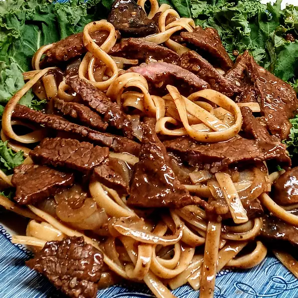

Bulgogi

Bulgogi
This is one of the most well known Korean foods...very delicious and if you have been around this dish... never forget. Also, if you eat with rice..wooh...yummy. Try, you gonna love it.
Per Serving: 439 calories; protein 44.2g; carbohydrates 24.3g; fat 17.5g; cholesterol 100.6mg; sodium 3820.3mg.
Ingredients
- 1 cup soy sauce
- 1/2 cup pear juice or white wine
- 3 tablespoons white sugar
- 2 tablespoons chopped garlic
- 1 teaspoon sesame oil
- 1 teaspoon sesame seeds
- 1 tablespoon ground black pepper
- 1 teaspoon monosodium glutamate
- 1 (2 pound) beef rump roast, sliced into thin strips
- 1 onion, cut into thin strips
Directions
- In a large bowl, mix together soy sauce, pear juice, sugar, garlic, sesame oil, sesame seeds, black pepper, and monosodium glutamate. Place beef and onions into the mixture, and stir to coat. Cover, and refrigerate for 1 hour.
- Preheat grill pan over high heat. Brush oil over grill pan, and add beef and onions. Cook, turning to brown evenly, for 3 to 6 minutes, or until done.
Web link:
https://www.theodinproject.com/lessons/foundations-recipes